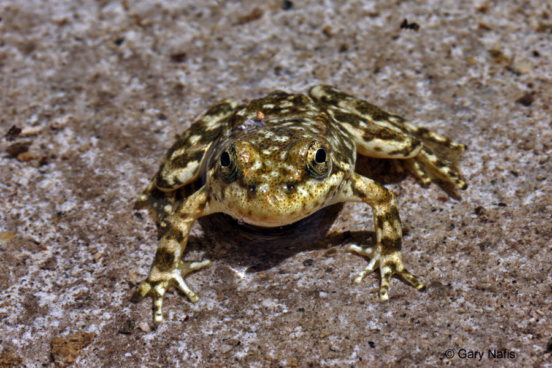

Code
library(tidyverse)
library(here)
library(patchwork)
library(lubridate)
library(readxl)
library(janitor)
This report explores Mountain yellow-legged frog (Rana muscosa, RAMU) amphibian abundance data recorded by the Sierra Lakes Inventory Project. From the Environmental Data Initiative repository: “The Sierra Lakes Inventory Project (SLIP) was a research endeavor that ran from 1995-2002 and has supported research and management of Sierra Nevada aquatic ecosystems and their terrestrial interfaces. We described the physical characteristics of and surveyed aquatic communities for >8,000 lentic water bodies in the southern Sierra Nevada, including lakes, ponds, marshes, and meadows.”
library(tidyverse)
library(here)
library(patchwork)
library(lubridate)
library(readxl)
library(janitor)Load in the data.
Filter for Rana muscosa and life stage. Lubridate to edit date and make year a factor.
Group by life stage and year and summarize to find Rana muscosa abundance.
frog_ds <- read_excel(here('posts', '2024-02-02-data-viz','data', 'sierra_amphibians.xlsx')) %>%
clean_names()
ramu_ds <- frog_ds %>%
select('survey_date', 'amphibian_species', 'amphibian_life_stage', 'amphibian_number') %>%
filter(amphibian_species == 'RAMU', amphibian_life_stage != 'EggMass') %>%
mutate(year = lubridate::year(survey_date))
ramu_ds$year <- factor(ramu_ds$year)
ramu_count <- ramu_ds %>%
group_by(amphibian_life_stage, year) %>%
summarise(amphibian_number = sum(amphibian_number, na.rm = TRUE)) %>%
ungroup()year_plot <- ggplot(data = ramu_count, aes(x = year, y = amphibian_number, fill = amphibian_life_stage)) +
geom_col() +
scale_fill_manual(values = c("darkgreen", "lightgreen", "#FED976"))+
scale_y_continuous(breaks = scales::pretty_breaks(n = 10))+
labs(x = '',
y = 'Number of Amphibians',
fill = "Life Stage") +
theme_minimal()+
theme(axis.text.x = element_text(angle = 45, hjust = 1))
#scale_y_log10() -- decided not to put it on the log scaleFilter for Rana muscosa and life stage (adult and sub-adult only). Lubridate to edit date.
Group by life stage (adult and sub-adult) and lake and summarize to find Rana muscosa abundance. Find the top 5 lakes with the greatest RAMU abundance.
adult_ds <-frog_ds %>%
select('survey_date', 'amphibian_species', 'amphibian_life_stage', 'amphibian_number', 'lake_id') %>%
filter(amphibian_species == 'RAMU',
amphibian_life_stage != 'EggMass',
amphibian_life_stage != 'Tadpole') %>%
mutate(year = lubridate::year(survey_date))
adult_counts <- adult_ds %>%
group_by(lake_id) %>%
summarise(amphibian_number = sum(amphibian_number, na.rm = TRUE)) %>%
ungroup()
top_frogs <- adult_counts %>% top_n(5, wt = amphibian_number) %>%
mutate(lake_id = paste("Lake", lake_id, sep = " ")) %>%
mutate(lake_id = fct_reorder(lake_id, amphibian_number))lake_plot <- ggplot(data = top_frogs, aes(x = lake_id, y = amphibian_number)) +
geom_col(fill = "#3CB371") +
labs(x = '',
y = 'Number of Amphibians',
title = expression(" "),
subtitle = 'Adult + Subadult combined') +
theme_minimal()+
theme(axis.text.x = element_text(angle = 45, hjust = 1))figure_1 <- year_plot + lake_plot
figure_1 + plot_annotation(tag_levels = "A", title = "Mountain yellow-legged frog Abundance")
Knapp, R.A., C. Pavelka, E.E. Hegeman, and T.C. Smith. 2020. The Sierra Lakes Inventory Project: Non-Native fish and community composition of lakes and ponds in the Sierra Nevada, California ver 2. Environmental Data Initiative. https://doi.org/10.6073/pasta/d835832d7fd00d9e4466e44eea87fab3
@online{calbert2024,
author = {Calbert, Madison},
title = {Data {Wrangling} and {Visualization}},
date = {2024-02-02},
url = {https://madicalbert.github.io/posts/2024-02-02-data-viz/},
langid = {en}
}